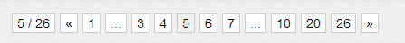
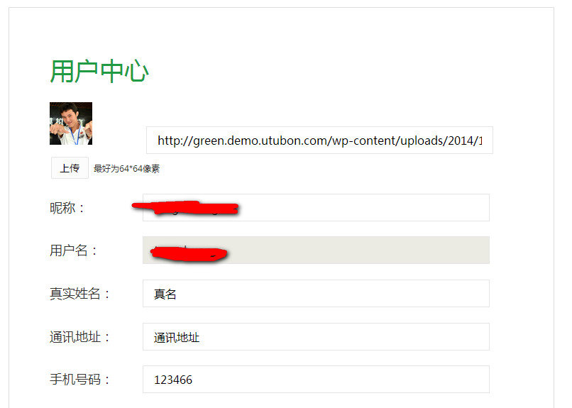
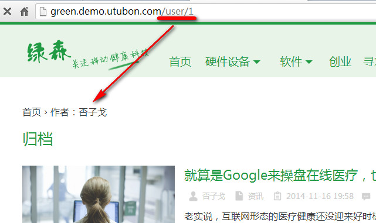

读者发现你的网站拥有各种友好的功能，或许能给你带来意想不到的收益哦，你懂的！
GD提供了我不少以前要收费的功能，其中最通用的几个已经完全免费，你自己都可以看源码，我不做任何遮掩，就是希望你可以通过这款主题专心做内容。
下图是我自己的博客中的翻页导航，因为演示站文章量不多，所以我只好用自己的博客来演示。

普通博客中只有一个“新的文章”“旧的文章”的链接用来前后翻页，而GD中提供了有利于SEO的翻页功能。它比其他主题的翻页导航更先进的是，GD提供了以10页为步长的翻页，你可以看到上图中有“10”“20”两个按钮，这两个就是按照10来计算的，这种翻页更有利于SEO，让页面的深度更浅。
在这个翻页导航的基础上，我使用了自己开发的pagenavi.js插件，非常自由的控制往下拖的时候加载下一页的内容。
每一篇文章下方，都有一个文章推荐的区域，根据文章的标签、分类来推荐相关文章，提高用户的阅读深度和SEO效果。
不要告诉我你不知道为啥这么做……为了SEO好吗。通过后台的小工具箱可以极其轻松的把首页链接和全局链接分开来。
前面已经提到过来，不多说。和那些杂碎版的滚动悬浮代码有本质的区别，GD的悬浮是智能的，当滚动到底部的时候自动判断，停止继续滚动，自己去演示站感受。同时，它还兼容响应式布局。
没错，我已经第三次提到投稿了，GD的投稿真的很简介，我个人真的很喜欢，这种感觉，你听过一首歌，叫《我的滑板鞋》吗？
投稿是主题默认就有的，后台设置好之后，就可以用，完全免费哦。
你不一定非得要上传特色图片，只要你的文章中有图片，GD就会自动抓取作为首页的缩略图。当然，自己上传特色图片更好。
GD自动增加了文章被查看的次数，是用post_meta来实现的，在后台编辑文章的时候，可以看到这个数目，你还可以用这个数目来进行排序，如果你懂一点开发的话。
中国人当然要用中文用户名。用邮箱登录一方面显得高大上，另外一方面也是为了安全，你可以从网站中找到我的用户名，但是只要我不公布，你找不到我的邮箱，别想盗我号。
这种标配性的东西，当然要内置了。
用户可以填写自己的QQ、微博、微信等等，国外的那些账号对我们根本没用，所以去掉。
开通众人撰稿模式之后，你的网站相当于一个小小的社区，所以有很多变化哦。这些变化会在下面一章中讲。


上面这个图有点NB吧，我把作者文章列表的信息该成了/user/user_id模式的URL。
如果用户注册并申请成为投稿者之后，还能上传本地头像，默认注册成为订阅者的话，只能引用头像的URL，比如微博的头像地址放到这里。怎样，很酷吧。

进入http://green.demo.utubon.com点击右上角的“登录”“注册”按钮测试，注意，每天只能注册一个用户，因此记住你的登录信息。哦，对了，为了凸显专业性，要求必须用邮箱登录。
还有更多细节，你可以到http://green.demo.utubon.com注册、登录、投稿自己测试哦。